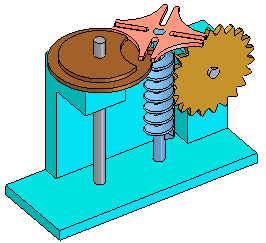

Analyzing movement and detecting collisions in assemblies
You can use the Drag Component command in the Assembly environment to analyze physical motion and detect collisions between parts in an assembly.
The Options button on the Drag Component command bar displays the Analyze Options dialog box so you can define the analysis options you want to use. To reduce the performance impact when working with large assemblies, you should limit the analysis to as few parts as possible.
The Analyze (Shown Parts Only) options allow you to specify whether only active parts or both active and inactive parts are analyzed. With large assemblies, you can activate only the parts you want to analyze, which can improve performance. You can also hide the parts you do not want to analyze. These options are used when you set the Physical Motion option on the command bar.
The Collision Options settings allow you to specify whether only the parts that contact the selected part are analyzed or that all parts that move in tandem with the selected part are analyzed. These options are used when you set the Detect Collisions option on the command bar.
Analyzing motion
The Physical Motion option on the command bar allows you to simulate motion in an assembly. This option detects contact between parts and applies temporary constraints between the contacting parts to simulate motion. When you set this option, you must select a part and define a movement type and value. Also with this option, the Distance and Angle values you specify are applied incrementally, rather than all at once. This makes it possible to analyze motion in mechanisms that contain gears and other forms of sliding or intermittent contact.

Collision detection
The Detect Collisions option on the command bar allows you to detect collisions between parts. You perform collision detection by dragging a part to simulate its movement in the assembly. The part you are dragging must be free to move in the assembly or be grounded. You can only select grounded parts and subassemblies when the Locate Grounded Components option on the Analysis Options dialog box is set.
If the part is not free to move, you can use the Suppress command on the shortcut menu to temporarily suppress one or more of its assembly relationships. When collisions are detected, the display changes to temporarily highlight the faces that are involved in the collision. You can also specify that the part you are dragging stops temporarily at the point of collision or that an audible warning is given.
If you are working in a shaded view, and a hidden face is involved in a collision, you will not be able to see the hidden face highlight. To see these faces highlight, set the view to Vector Hidden Line.
The current zoom level impacts the accuracy of collision detection. For more accurate results, zoom in closer to the area where collisions are suspected.
How do I
Move a part in an assemblyMove multiple parts in an assembly
Check for interference between parts in an assembly
Learn more
Moving and mirroring rules for assembly bodiesChecking interference on parts
Look up more details
Move Components commandMove Components command bar
Move Options dialog box
Drag Component command
Steering Wheel
Check Interference command
Drag Component command bar
Analysis Options dialog box
Check Interference command bar
Report page (Interference Options dialog box)
Interference Options dialog box
Options page (Interference Options dialog box)